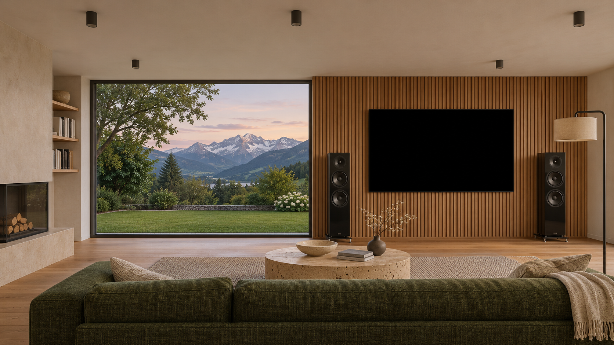
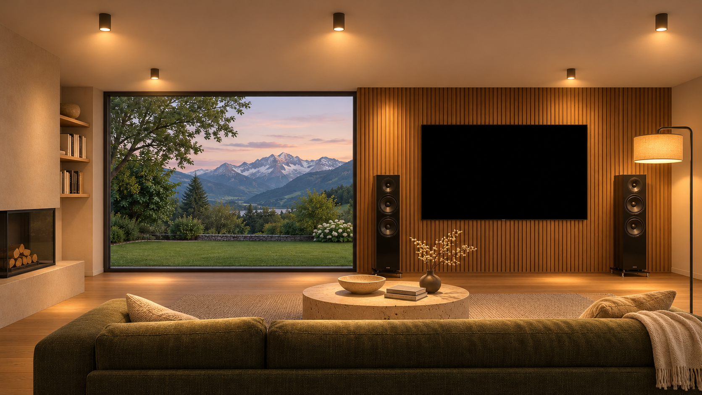

FREQUENCE TV / ÉTUDE VISUELLE
Un autre regard sur le salon.
Villa FTV · prototype photoréaliste · aucune publication
ESSAI LOCAL
Avant / Après
3D actuelle
Vue photoréaliste
01
Avant · 3D temps réel
02
Après · décor photographique animé


Ambiance
OFF
Cinéma
Détente
Total
Éclairage
100 %
Stores
Ouvrir
Stop
Fermer
Fermeture
0 %
Télévision
TV allumée
Pause
Programme
Course automobile
Football
Tennis